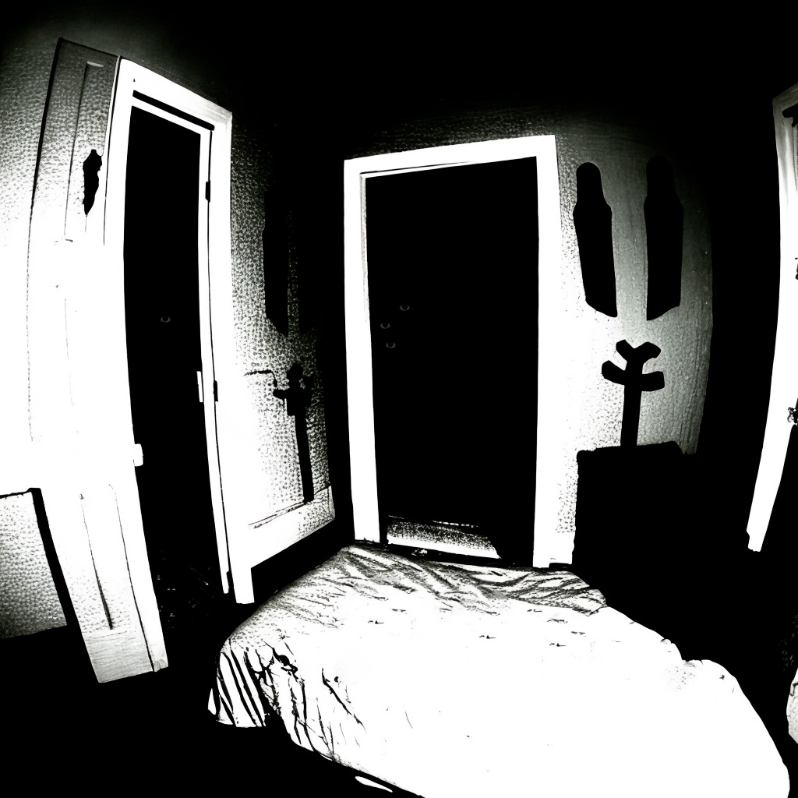

~header
SIT: M-001-BF (Наблюдатель)

*
Условия хранения: Камера категории A, которая не пропускает свет.**
SIT: M-001-BF представляет собой несколько летающих сущностей, похожих на глаза, обнаруженных в темноте.*
Их внешний вид и структура полностью соответствуют человеческим глазам, однако они не обладают никакими видимыми оптическими характеристиками.*
Диаметр каждого глаза — приблизительно 5см.*
От случая к случаю количество "глаз" менялось, варьируясь от 2 до 9.**
При контакте с человеком, SIT: M-001-BF немедленно вызывают у жертвы сильный страх и панику.*
Срочные исследование показали, что это эмоциональное воздействие происходит за счет неизвестной аномальной энергии, окружающей объект.*
Интенсивность эффекта страха показывает разный уровень от теста к тесту.*
Несмотря на паническую реакцию, вызываемую SIT: M-001-BF, субъекты не понесли физических повреждений от взаимодействия с ними.**
Как только освещение в помещении превышает уровень в приблизительно 150 люмен, объект исчезает и не появляется до очередного наступления темноты.*
Где оказывается объект после включения света — до сих пор неизвестно, однако помещение тестов было дважды проверено (вручную и автоматически), не принеся никаких результатов.**
С увереностью можно сказать, что SIT: M-001-BF не имеет способности проходить сквозь твердые объекты, т.к. спустя 35 минут после теста (во время которых все выходы из помещения были закрыты) уровень света был вновь
снижен до уровня ниже 150 люмен, и объект вновь показался в комнате, но совершенно в другом месте.
**Изображение подтверждает, что сущности объекта могут находиться в разных местах, но по-прежнему являются одним объектом
**Обнаружив SIT: M-001-BF в помещении, сотрудники SIT определили, что объект не может передвигаться, пока находится в темноте.
Несмотря на сильную панику, им удалось запереть объект в специальном металлическом резервуаре, после чего доставить его на территорию организации SIT и провести с его участием 9 тестов.
**Тест №1:**
///
((Уровень света в комнате — 220 Люмен. Объект не наблюдается. Испытуемый, ждем Вашей команды.*
--Готов.*
((Испытуемый готов. Начинаем тест №1.*
((Понижаю уровень света до 200 Люмен.*
((Объект не наблюдается.*
((Испытуемый, пожалуйста, опишите Ваши ощущения.*
--Небольшой мандраж, но не более. Никакого страха или паники.*
((Пульс испытуемого в норме. Понижаю уровень света до 150 Люмен.*
((Объект не наблюдается.*
((Испытуемый, пожалуйста, опишите Ваши ощущения.*
--Чувствую наплыв страха. Они рядом.*
((Пульс испытуемого повышен. *
((Понижаю уровень света до 100 Люмен.*
((Пульс испытуемого экстримально повышен.*
((Объект наблюдается в помещении. Испытуемый, пожалуйста, опишите Ваши ощущения.*
-- Сильный страх... Паника. Уберите их. УБЕРИТЕ ИХ!*
\\\
* Тест завершен досрочно.
** Тесты №2-5 завершились со схожими результатами, за исключением теста №4, во время которого испытуемый при понижении уровня света до 50 Люмен потерял сознание.
** Во время тестов №6-8 была проверена возможность объекта проходить сквозь твердые объекты.
** Тест №6: **
///
((Понижаю уровень света до 150 Люмен. Объект наблюдается.*
((Испытуемый, пожалуйста, опишите Ваши ощущения.*
-- Чувствую сильный страх, но могу себя контролировать.*
((Пульс испытуемого повышен.*
((Повышаю уровень света до 220 Люмен. Объект не наблюдается.*
*
((Прошло 35 минут с момента повышения уровня света. Испытуемый, опишите Ваши ощущения.*
--Полностью спокоен.*
((Понижаю уровень света до 150 Люмен.*
((Объект все еще в помещении, но находится в отличном от предыдущего месте.
\\\
*Все тесты были завершены с идентичным результатом.
** Тест №9: **
///
((Уровень света — 100 Люмен. Объект наблюдается.*
((Испытуемый, пожалуйста, покиньте помещение.**
((Испытуемый покинул помещение. Объект наблюдается.*
((Повышаю уровень света до 220 Люмен. Объект не наблюдается.**
((Понижаю уровень света до 0 Люмен. Объект наблюдается.
\\\
*Тест №9 показал, что объект показывает себя, если находится в помещении, не учитывая то, находятся ли в нем люди. **
Во время всех этих тестов сотрудник SIT, который стоял за полупрозрачным стеклом, (и даже во время теста №7, когда сотрудник был единственным в зоне видимости объекта) не испытывал страх или панику. Отсюда следует вывод, что если объект SIT: M-001-BF не видит цель, он не может оказать на нее никакого влияния.**